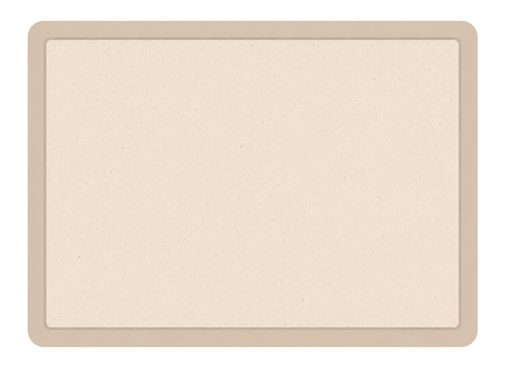

ארבעת העקרונות לכתיבת סילבוס למחנכות כיתה חדשות
לאחר הצפייה בסרטונים, ניתן לחזור בקצרה לארבעת ההיבטים המרכזיים
ולבחון כיצד הם באים לידי ביטוי בסילבוס.
החלק הבא נועד לשמש כתזכורת ממוקדת לתכנון, ולא כפרק
למידה נוסף.
 לחצו על הפתקים הצבעוניים להצגת ההסברים.
לחצו על הפתקים הצבעוניים להצגת ההסברים.
